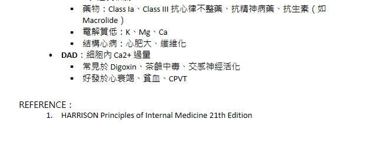

心臟電生理
Tuesday, March 25, 2025
6:48 PM

使用 OneNote 建立。
![心肌細胞間的差異：
心房、心室的心肌細胞：和身體其他可興奮性細胞相同
維持主導休息電位：K+
產生構成動作電位的去極化 (Phase 0)：Na+快速流入細胞(Na+通道)
Ca2+通道：只有L-type (phase 2)
期別：phase 0→1→2→3→4
SA node、AV node的起搏細胞(pacemaker cell)
維持主導休息電位：向細胞內流入的Na+流(iF Funny current)，導致細胞自己慢慢去極化
產生構成動作電位的去極化：Ca2+流入細胞(L-type Ca2+通道)
Ca2+通道：
L-type：phase 0
T-type：phase 4
期別：phase 0→3→4
心肌細胞與節律細胞的差異
特徵
心室/心房肌細胞
SA/AV node 節律細胞
主導靜止膜電位
K+ 外流維持
Funny current (iF)，Na+漸入造成慢性去極化
去極化離子
Na+ (Phase 0)
Ca2+（L-type 為主，phase 0）
鈣通道類型
L-type
L-type（Phase 0）、T-type（Phase 4）
動作電位分期
Phase 0→1→2→3→4
Phase 4→0→3
L-type（長效）：高電壓活化，為主力去極化通道。
T-type（短效）：低電壓活化，幫助 pacemaker cell 在 phase 4 自動去極化到達閾值。
動作電位的分期
Phase 0：Na+流入細胞，電位往上竄升
被刺激而膜電位到達閾值-60mV引發動作電位
主要是Na+(正電)流入細胞，電位上升誘發去極化
Phase 1：K+開始往細胞外流，電位稍向下降
去極化時，對電位敏感的鉀離子通道(Ito)打開，K+(正電)往細胞外流，使動作電位稍下降
Phase 2：K+持續網細胞外流，Ca2+持續流入細胞，電位維持在高原期
去極化時，鈣離子通道打開，使得Ca2+(正電)持續流入細胞，與流出細胞的K+(正電)相抗衡，形成高原期](心臟電生理_asset_0.png)
![去極化時，鈣離子通道打開，使得Ca2+(正電)持續流入細胞，與流出細胞的K+(正電)相抗衡，形成高原期
Phase 3：K+持續往細胞外流，電位下降至休息膜電位
Phase 4：K+濃度差異
心肌的舒張期，此時細胞處於休息膜電位-90 mV
主要是細胞內外的鉀離子濃度差異所致，由兩種離子通道控制，分別為Na-K 幫浦與使鉀進入細胞的鉀離子通道
在 SA/AV node，phase 4 為去極化期（非穩定休息），由 funny current (If) 引起，逐漸達閾值觸發下次動作電位。
心室細胞的動作電位分期與心電圖波形的關係
Phase 0：對應到QRS波
Phase 1、２：對應到ST波段
Phase 3：對應T波
Phase 4：對應T波到下一個QRS波之間
Phase
離子流動
特徵
ECG 對應
0
Na+快速內流
快速去極化
QRS 起始
1
K+短暫外流
初期再極化
ST段開始
2
Ca2+內流 + K+外流
電位高原期
ST段持續
3
K+外流
完全再極化
T波
4
K+濃度維持
靜止膜電位（-90mV）
T波後至下次 QRS
心肌動作電位傳遞
竇房結 SA node
位於上腔靜脈(SVC)和右心房(RA)的交會處
有節律性，以60-100bpm的頻率產生動作電位
受自律神經纖維支配，使其可以透過中樞神經系統來進行精準的心律調控
房室結 AV node
位於Koch triangle，心房中隔內，冠狀竇的上方
在正常的狀況下，房室結是心房與心室之間唯一的電流連結
AV node 具有延遲電位傳導的功能，讓心室有足夠時間充填。
His bundle
一群特化的傳導纖維，在進入心室後會分出左束支(left bundle branch)和右束支(right bundle branch)分別支配左、右心室
Purkinje fibers
由左右束支繼續分化而成，位置靠近心內膜側
電流傳導的速度比起一般的心肌細胞更快，有助於心室的協同性收縮](心臟電生理_asset_1.png)
![電流傳導的速度比起一般的心肌細胞更快，有助於心室的協同性收縮
Purkinje fibers 的動作電位持續時間較長、易發生EAD，在抗心律不整藥物影響下更明顯。
After depolarization
正常動作電位仍未完成時產生的異常去極化
Early afterdepolarization (EAD)
phase 2 Ca2+通道或phase 3 Na+通道過度開啟→再極化過程中產生無效的去極化電流→動作電位間期過長→易Torsades des pointes(TdP)
成因：(任何會引起QT prolong的原因)
QT prolong：心搏過緩
電解質異常：低K/Ca/Mg
藥物：鎮靜劑、抗心律不整藥(Ia、III)可延長動作電位，增加 EAD風險
心臟結構異常：心臟肥大、心臟纖維化
Delayed afterdepolarization (DAD)
易發生在phase 4
細胞Ca2+過多→過量的Ca2+進入肌漿網→肌漿網異常釋放Ca2+→觸發細胞膜的鈉鈣交換系統產生內向電流→心肌細胞發生次去極化→VT/VF
成因：
數量過多的鈣離子內流：Digoxin或交感神經過度活躍引起
貧血：為了排出胞內的氫離子造成鈣離子濃度堆積
心臟衰竭：鈣離子代謝異常或鈣處理不良
Catecholaminergic polymorphic ventricular tachycardia (CPVT)： 遺傳性心律不整、平均發病年齡為7~9歲、運動誘發，與鈣離子代謝相關的基因突變有關
過度的心臟交感興奮：劇烈運動或強烈情緒壓力
EAD vs DAD
比較項目
Early Afterdepolarization (EAD)
Delayed Afterdepolarization (DAD)
發生時期
Phase 2 或 Phase 3
Phase 4
機制
鈣或鈉通道延遲關閉，導致再極化失敗
細胞內 Ca2+ 過多→鈉鈣交換系統誘發內向電流
成因
QT 延長、低 K+/Ca2+/Mg2+、藥物影響（Ia、III類抗心律不整、抗精神病、抗生素）、心肥大
Digoxin 中毒、交感神經過度活化、心衰竭、CPVT、運動或情緒誘發
臨床後果
TdP（Torsades de pointes 扭轉型室頻）
VT/VF、CPVT（Catecholaminergic polymorphic VT）
EAD：QT 延長相關
手繪圖案](心臟電生理_asset_2.png)